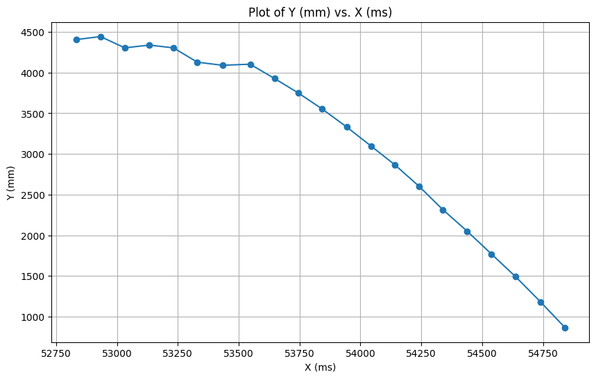
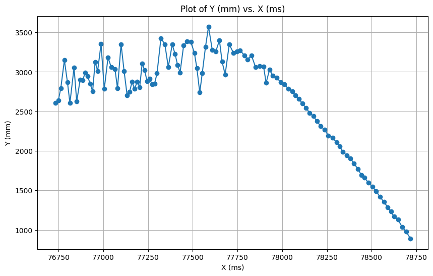
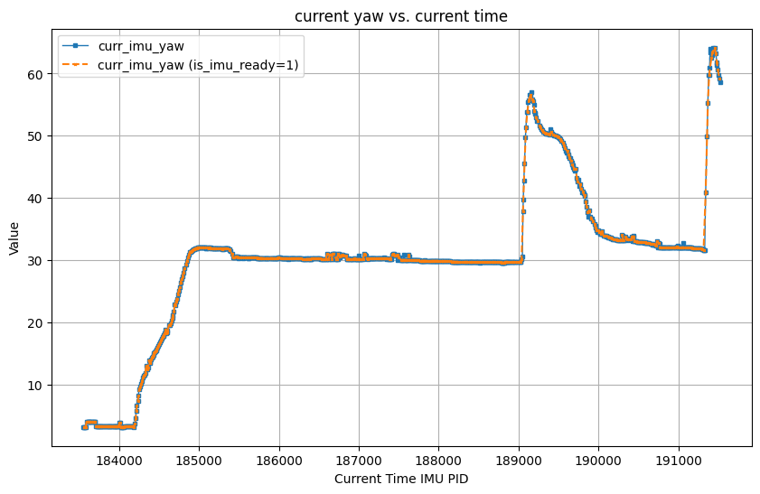

Estimate drag and momentum
To build the state space model of the system, I first set the car's speed to 60%(about 39321) of max speed(65535). To keep the car moving in a straight line, the right motor input is 37095 and the left motor input is 39321. Then, I made the car drive toward the wall at this speed for 2 seconds. The following are the related plots.
When the time budget was 20ms, I passed the same command to the car and recorded the data.
All data are recorded in a CSV for future use.
As shown in Figure 5, the measurements generated from the 20 ms time budget fluctuate too much. Thus, I will build a Kalman filter using
the data generated from the 50 ms time budget.
According to the figure 2, the speed at steady state is -2.86m/sec.
The 90% rise time is 1.1475ms(from 0.625s to 1.9s) and the speed at this 90% rise time is 2.8m/sec.
According to the formulas,
and
.
The
and
Initialize KF (Python)
According to above value calculated, the state space equation is
and
and
.
Thus, I initialize my Kalman filter in python as following:
I then tried to just integrate the yaw speed from the gyro measurements, but it drifted at one degree in two seconds, even though the car was stationary. The data was completely unusable. I minimized the effects of drift by calculating the average drift (drift angle per second) and subtracting the average drift each time I got yaw. The final one minute drift was about 3 degrees.
Finally, I chose to use digital motion processor data from the ICM-20948's FIFO buffer. The program used the quaternion data to calculate the yaw angle. The function I used is provided in Example7_DMP_Quat6_EulerAngles of Sparkfun 9DoF IMU library . The yaw calculating from quaternion data (after it is stable or about 1 minute after IMU start) has only a few degrees of drift, even when the car is at rest for more than 10 minutes. And, when shaking and rotating the car (applying noise), the resulting angle is more accurate. Since this method takes some time to get a stable yaw value, I added a function stable_IMU() to determine if the yaw is stable and use it for setup().
Since I use 'ICM_20948_USE_DMP', according to line 1551 in the ICM_20948.cpp , the gyro full scale range is set to +-2000 dps (degree per second). I think this will be sufficient for our application, as cars do not rotate at speeds of up to 6 revolutions per second.
Derivative Term
Although the derivative term in the PID system is integrated from gryo_z, it is still reasonable to use it. It is easier to compute the derivative of the current error and previous error with respect to corresponding time than it is to compute the sum of gryo_z between the current time and the previous time. Also, there are about 16ms between each IMU data in my program, it is not accurate to use only the gryo_z to calculate the derivative term and it is complicate to add extrapolation on gyro_z data.
Considering the need to change the target yaw while the car is running, and the implementation of my program, this operation causes a derivative kick. This is because my derivative term relies on calculating the rate of change between the error at this time and the error at the previous time. I think using the method provided by 'Improving the Beginner's PID' can effectively eliminate the derivative kick. However, I did not use this method for npw, but attenuated the effect through a low-pass filter.
This low pass filter also helped me to smooth out the noise when integrating the yaw speed.
PID discussion
In this lab, I used PID controller. According to previous lab, the effective operating range of my motor is 17000-65535 (16bit analogread resolution) when the car is rotating on the lab floor. The unit of yaw returned by my get_euler_angle function is degree, and the frequency is 16.5ms. I think the coefficient of P should be < 0.5, I should be < 0.1 and > 0.1, D should be < 0.5. I assume the output of the PID is smaller than 50, and than map the pid output to pwm by using mapFloatToFloat(pwm (or -1*pwm), 0, 36, 17000, 65535).
I chose to use a combination of P, I, and D controllers is because the P controller can influence the pwm output based on the current error; the integral-isolated I controller prevents the car from stopping at a position that is some angles away from the target yaw; the D controller can dampen rapid changes in error and reduce overshoot when the car is rotating rapidly.
Programming Implementation
I designed the commands to control the PID and run the rotation to the specified angle separately. After completing the rotation to the specified angle, the program will send the data generated by the adjustment process to the computer via BLE for subsequent analysis.
In the code, I use curr_imu_yaw and curr_time_yaw to record the angle between the current and initial state; prev_imu_yaw and prev_time_yaw to record the last yaw and time of measurement; error_yaw, prev_error_yaw are used to record the value and time of the last error and measurement; last_imu_yaw and last_time_imu_yaw are used to record the last yaw value and time returned by the imu.
In main loop of rotating to the specified angle, I discuss two cases: 1. imu returns a reading; 2. imu does not return a reading. In the first case, it updates the yaw and time of current and previous, and calculate the slope between the current and last IMU return values to perform the extrapolation operation without the IMU return data. In the second case, I will compute the extrapolated yaw and use that to update the current and previous yaw and time.
Then, I calculated the p, i, and d values and recorded those values into an array. I chose to use integral isolation for the integral terms to prevent it from accumulating error at the beginning of rotating, which would result in rotating too fast and exceeding the target yaw. i chose to filter the derivative values using a low-pass filter to obtain smooth values. I chose to use linear interpolation to calculate the predicted yaw when the IMU is not ready in order to avoid losing control of the robot.
I added a counter to my rotate to specific angle function, and when the counter reaches an internal value (say 1000), it changes the global variables Kp_rotate, Ki_rotate, Kd_rotate, and setpoint. This enables the PID to be changed while the controller is running. In future navigation applications, a similar approach can be used when other functions want to change the PID value or setpoint.
To make it easier in the future to implement the ability to modify the direction when the robot moves back and forth, I need to add the pid output for each motor for rotation and the pid output for each motor for moving toward target and pass it to the motors.
Result
I set the setPoint as 30 degrees. And push the robot twice during the program running.
Wind-up implementation and discussion
I applied the prevent wind-up mechanism in the design of the PID controller, including integral term constrain and integral isolation, as shown in the following code.
If the mechanism to prevent wind-up is not used and the difference between the yaw error and the set value does not change, the car will rotate faster and faster until the motor input pwm exceeds the upper limit of the motor, and the car can easily rotate beyond the target yaw value without being able to stop.